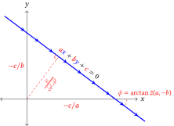

Optics in Homogeneous Coordinates, Introduction
Motivation
Case 1: Imaging problems
When teaching undergraduate optics, I always found the problems containing series of lenses and mirrors tedious. The standard solution is to find the image of an object created by each optical element using Gauss’s Lens equation. This image then becomes the object for the next element. Apply Gauss’s equation again. Rinse and repeat. For one or two lenses this is not too bad, but once you get to something like a microscope (objective, tube lens, and ocular), then it really drags. Worse, if your object moves a little bit you have to start over. And there is also the weird issue of infinitely far objects and images to deal with. It seems a little incomplete. I’m looking for a better, or at least less tedious, method.
One solution is that I can take two rays that pass through my object point and find where they intersect on the output side to locate the image, but that’s still a lot of algebra, and I am lazy.
Case 2: Ray tracing
In my research lab, we mostly deal with lasers, which to a reasonable approximation can be treated as geometric rays (at least as far as alignment is concerned). When sketching out a new optical setup, I’ll often use ray transfer matrices (also called “ABCD” matrices) to set things up. Each ray is represented as a vector containing the ray height and slope. Each optical element corresponds to a matrix. By multiplying these matrices together we can get a representation of the entire optical system. Matrix times input ray equals output ray.
The same ABCD matrix that describes the path of geometric rays through the system also describes the change in size of Gaussian laser beams as they travel through the system. This seems like magic, because there is no apparent relationship between rays and the size of diffracting laser beams. The detailed proof requires digging into the guts of the diffraction integrals2. Surely there is a simpler explanation. (Arnaud has a nice model using complex-valued rays3, which again seems like magic, but at least understandable magic.)
This is great, as far as it goes, but it assumes all of the lenses and mirrors are perfectly aligned and centered. Often that just isn’t the case. For example, a common right-of-passage for students in a laser lab is learning to inject a beam into a fiber. There’s a lot of degrees of freedom that you have to manage to high precision:
- x, y, and z position of the focusing lens
- two tilt angles of the lens
- two tilt angles of the incomming beam
- the location of the beam’s waist
Can we put together a concise mathematical model of all of these degrees of freedom?
The goal
What I would really like to do is find a solution that lets me model optical elements in any position or orientation and lets me solve imaging problems. And I would like it to be as simple to use as the ABCD matrices. Can I get there starting from the old-fashioned ABCD matrices?
The answer is “yes,” but first I need to re-examine what the ABCD matrices are doing to the rays, in a geometric sense. And to do that, I first need to mathematically define rays as oriented lines.
A homogenous vector representation of lines

The equation of a line
Let’s start with the equation for a line in two-dimensions. If our coordinate axes are (x,y) then any line will have the form \(ax+by+c=0\) . Rather than write down the equation for every line, we could just keep track of the coefficients (a,b,c). Also, if we multiply the whole equation (or all of the coefficients) by a non-zero scalar, we get the same line. In other words, the vector (a,b,c) gives us a homogenous representation of the line.
I think most of us almost habitually use the slope-intersept form of a line: \(y = mx+h\) . In our new represenation we rearrange this to \(mx -y + h = 0\) and identify the coeffients as (m,-1,h). (Hold on to this – it will be important.)
Normalization
Because we can multiply the line coefficients by any nonzero scalar, is there any prefered normalization? For most of what we’ll be doing, the normalization won’t matter, but let’s take a quick peek. One convenient choice is to divide the line coefficients by \(\sqrt{a^2+b^2}\) . Then the new a and b coefficients become the cosines of the angles between the axes and the line and the new c value gives the (signed) distance from the origin to the line. With this normalization, the angle θ between any two lines can be calculated easily: \(\theta=\arccos(a_1a_2+b_1b_2)\) (proven by applying some trig identities).
Orientation
Besides normalization, we have one more degree of freedom that we can assign meaning to: the overall sign of the coefficients. We’ll interpret this as orientation or the direction of travel along the line. For b>0 the line goes left-to-right. If b=0, then a>0 indicates downward. Lastly, if a=b=0, then c>0 is the imaginary line infinitely far away encircling the space in a counter-clockwise direction.
By keeping track of these signs, we can build an expression for mirrors that also changes the direction of the rays.
The ray-transfer matrices
Let’s back up to the beginning and look at one way to describe optical systems. If we have an incoming ray r that passes through the input plane of the optical system with height h and slope m and an outgoing ray r’ with height and slope h’ and m’, we can relate these by the matrix equation
\[ \begin{pmatrix} h' \\\ m' \end{pmatrix} = \begin{pmatrix} A & B \\\ C & D \end{pmatrix} \begin{pmatrix} h \\\ m \end{pmatrix}. \]
Now, let’s do the same transformation on a line as we described above. Our point-slope version of a line has homogeneous coordinates (a,b,c) = (m,-1,h). By rearranging the order of the coefficients, we can get
\[ \begin{pmatrix} h' \\\ m' \\\ -1 \end{pmatrix} = \begin{pmatrix} A & B & 0 \\\ C & D & 0 \\\ 0 & 0 & 1 \end{pmatrix} \begin{pmatrix} h \\\ m \\\ -1 \end{pmatrix}. \] or more generally, \[ \begin{pmatrix} c' \\\ a' \\\ b' \end{pmatrix} = \begin{pmatrix} A & B & 0 \\\ C & D & 0 \\\ 0 & 0 & 1 \end{pmatrix} \begin{pmatrix} c \\\ a \\\ b \end{pmatrix}. \]
This is similar enough to our original ABCD matrices that it has some promise without being too far from where we started.
Wrapping up
What have we done here? I’ll admit it looks underwhelming. We’ve added an extra dimension to our ray-transfer matrix, but it doesn’t seem to do anything but multiply a bunch of ones together.
There are two important things here. First, the original ABCD matrices look more like a bookkeeping tool than anything “real”, because we’re just keeping track of some coefficients. (In fact, standard optical engineering textbooks usually dismiss them as pointless fluff4 or don’t mention them at all5.) But now, we see a bit of geometry. We have a general description of a line being transformed into another line.
Second, we have added some additional degrees of freedom to our framework. We used one of these to add a meaningful orientation to the lines. Three more degrees of freedom can be used to translate and rotate the coordinate axes or, equivalently, our optical elements. This will be the topic of Part 2.
Footnotes
T. Corcovilos. Beyond the ABCDs: A projective geometry treatment of paraxial ray tracing using homogeneous coordinates. American Journal of Physics 91(6):449-457 (2023). doi:10.1119/5.0083069 Preprint at arXiv:2205.09746↩︎
S. A. Collins, J. Opt. Soc. Am., JOSA 60, 1168 (1970). doi:10.1364/JOSA.60.001168↩︎
J. Arnaud, Applied Optics 24, 538 (1985). doi:10.1364/AO.24.000538↩︎
W. J. Smith, Modern Optical Engineering: The Design of Optical Systems, 4th ed (McGraw Hill, New York, 2008). ISBN: 978-0-07-147687-4↩︎
M. J. Kidger, Fundamental Optical Design (SPIE, Bellingham, 2000). ISBN: 978-0-8194-9599-0↩︎